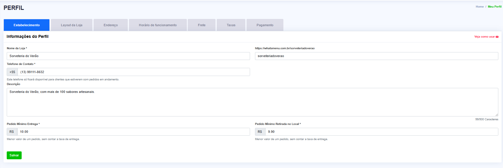
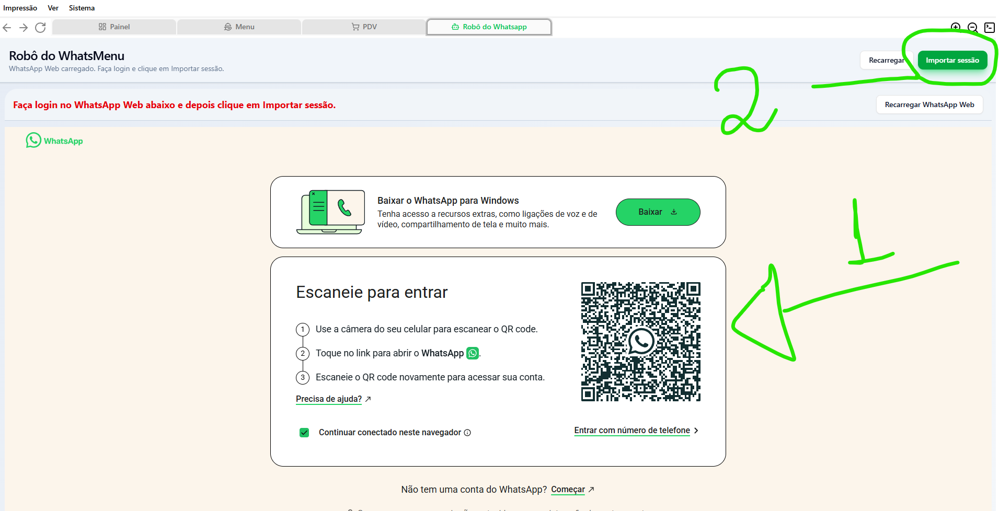
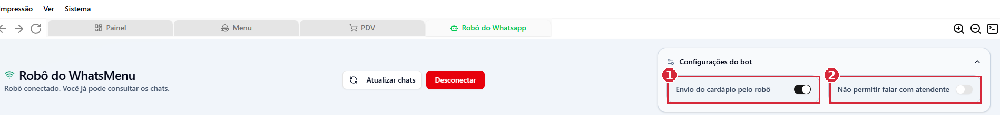

Toda implantação segue estes 4 passos, nesta ordem. Ao final, faça o pedido teste e ajude o lojista a divulgar o link do cardápio.
| Passo | O que fazer | Quem faz |
|---|---|---|
| 1 | Preencher Meu Perfil | Lojista, com nosso auxílio (Pagamento só o lojista) |
| 2 | Montar o Cardápio | Freelancer (pago) ou lojista com nosso auxílio |
| 3 | Instalar o sistema no computador ou no celular | O suporte faz (por acesso remoto). Só no celular o lojista faz, com o nosso auxílio |
| 4 | Configurar impressora e robô | O suporte faz (por acesso remoto). Impressora pelo celular: o lojista faz, com o nosso auxílio. No robô, o próprio lojista precisa escanear o QR Code |
| ✓ | Finalização e divulgação: pedido teste e link do cardápio no Instagram | Lojista faz, suporte acompanha |
/atalho (ex.: /atualizar, /celular) são mensagens prontas para enviar ao lojista pela touschat.Onde fica: menu lateral › Meu Perfil

Ajude o lojista a preencher todas as abas, uma de cada vez, clicando em Salvar ao final de cada uma:
| Aba | O que preencher |
|---|---|
| Estabelecimento | Nome da loja, link da loja, telefone de contato, descrição, pedido mínimo de entrega e de retirada |
| Layout da Loja | Logo, capa e cores da loja |
| Endereço | Endereço completo do estabelecimento |
| Horário de funcionamento | Dias e horários em que a loja recebe pedidos |
| Frete | Taxas de entrega por região ou distância |
| Pagamento | Formas de pagamento aceitas |
O lojista escolhe uma de duas opções:
| Opção | Como funciona | Prazo |
|---|---|---|
| Cardápio pago | O freelancer monta o cardápio de até 100 itens por R$ 29,90, acompanhado no Trello. Se for mais de 100 itens, consulte antes um suporte para verificar o valor a ser cobrado. | 1 dia útil |
| Lojista monta | O próprio lojista cadastra em Cardápio, com nosso auxílio | Depende do lojista |
Pergunte ao lojista onde ele vai usar o sistema:
/atualizar./celular.Você pode instalar o seu sistema da WhatsMenu clicando neste link NO SEU COMPUTADOR https://github.com/Grove-Company/.github/releases/download/v3.0.15/whatsmenu-desktop-3.0.15-setup.exe 1️⃣ Copie e cole o link no Google Chrome, ele vai baixar o app que vai aparecer na setinha para baixo do lado da barra de busca 2️⃣ Após baixar e abrir, na tela azul, clique em “Mais informações” e depois em “Executar mesmo assim” ✅ Pronto! Sistema instalado. Depois me avise aqui como ficou, por favor 😊
Com esse passo a passo o lojista já instala o app e configura a impressora.
Vamos iniciar a configuração no celular da loja 📱 Para fazer a instalação, precisamos que: 1️⃣ Você esteja com o celular da loja em mãos 2️⃣ O celular tenha WhatsApp Business instalado Agora instale o WhatsMenu Mobile (Android) pelo link: https://github.com/Grove-Company/.github/releases/download/mobile-v1.0.9/application-1bbac0f4-69bc-476c-a887-c55c54091ed2.apk 📖 Passo a passo da configuração: https://youtu.be/uxXoyyGW5mk Se tiver impressora, ela precisa ser Bluetooth e estar pareada no celular da loja 🖨️
Depois que o lojista instalar, envie esta segunda mensagem para o app não ser pausado pelo celular:
- Vai nas configurações do seu celular e abre a parte de "Apps" ou "Aplicativos". - Procure pelo "WhatsMenu Mobile" na lista. - Dentro das opções do app, desmarque a opção “Pausar atividade do app quando sem uso”. - Na aba "Bateria", deixa a opção "Sem restrições" ou "Não restrito" marcada. - Depois, entra nas “Permissões do app” e desmarque também “Remover permissões e liberar espaço”. Fazendo isso, o aplicativo vai funcionar certinho o tempo todo, sem ser interrompido pelo celular. Se precisar de qualquer ajuda no passo a passo, me chama aqui que te ajudo rapidinho!
Primeiro confira o driver de impressão no sistema em Configurações › Gerais › Driver de Impressão:
| Onde o lojista usa o sistema | Driver correto |
|---|---|
| Celular (app) | Aplicativo de Impressão |
| Computador | Generic / Text Only |
Se usa pelo celular: a instalação e a impressora já foram configuradas no Passo 3. Só confirme com o lojista se o app está instalado e imprimindo automaticamente.
Se usa pelo computador (/generic): auxilie o lojista a instalar o driver Generic / Text Only, caso ainda não tenha.
Vídeo: como instalar o driver da impressora
No celular, o robô é a mensagem automática do WhatsApp Business (tem que ser o Business). Envie as duas mensagens abaixo, nesta ordem.
1º – troque os campos em maiúsculo e o link pelos dados da loja:
Olá ! Seja bem vindo ao NOME DA LOJA 🥳 👇Veja o nosso cardápio e faça seu pedido👇 https://whatsmenu.com.br/burguerino *Fazendo o primeiro pedido pelo link ganhe X% de desconto com o cupom NOME DO CUPOM*🚀 E ganhe 5% de cashback em cada pedido realizado pelo link Equipe NOME DA LOJA
2º – em seguida:
🚀Agora seus clientes vão receber automaticamente o link para fazer pedidos! 🥳 Siga o passo a passo abaixo para configurar no WhatsApp Business: 📌 Passo a passo: 1️⃣ Copie a mensagem que enviamos acima (com o link do cardápio) 2️⃣ Acesse o WhatsApp Business da loja 3️⃣ Toque na casinha no canto inferior direito e vá em Ferramentas 4️⃣ Vá em Mensagem de Ausência e Mensagem de Saudação 5️⃣ Cole a mensagem nas duas opções 6️⃣ Ative: "Enviar sempre" e "Enviar para todos" 7️⃣ Clique em Salvar ✅ Quando finalizar, envie a mensagem “FINALIZEI” aqui para concluirmos juntos! 😎
No sistema instalado no computador, abra a aba Robô do WhatsApp e conecte o WhatsApp da loja:

Se deu certo, a tela muda para “Robô conectado” e mostra as configurações do bot:

| Nº | Opção | Como deixar | Por quê |
|---|---|---|---|
| 1 | Envio do cardápio pelo robô | Sempre ativada | É o que faz o robô enviar a mensagem de saudação com o cardápio assim que o cliente chama para pedir |
| 2 | Não permitir falar com atendente | Ativar só se o lojista quiser | Usada quando o lojista não quer receber pedidos pelo chat do WhatsApp: a cada mensagem do cliente, o robô envia de novo a saudação com o link do cardápio |
Com os 4 passos feitos, peça para o próprio lojista fazer um pedido pelo link da loja e acompanhe com ele:
Assim o lojista vê na prática como o cliente faz o pedido, como ele recebe no painel e como sai a impressão.
Com tudo funcionando, ajude o lojista a divulgar o link do cardápio nas redes sociais. O link fica no topo da tela Cardápio (“Link de divulgação”) e tem o formato whatsmenu.com.br/nome-da-loja.
Colocar o link na bio do Instagram:
As respostas rápidas da touschat, separadas por assunto. Busque pelo atalho ou por uma palavra do texto e copie com um clique. Os campos como [nome] precisam ser trocados antes de enviar.